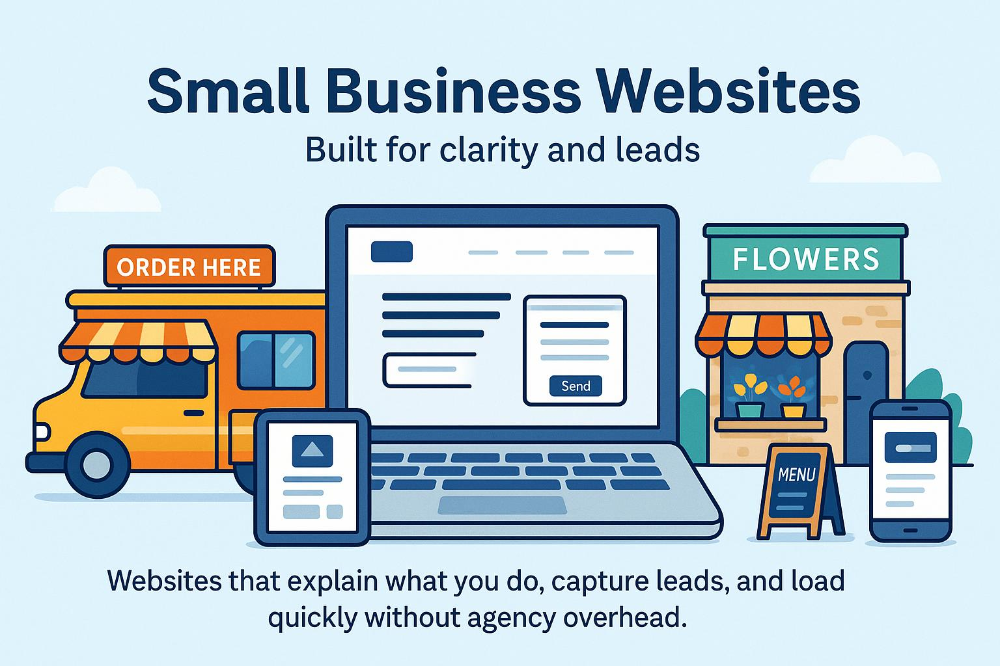

Small Business Website (3–5 pages)
Brochure site with Home, About, Services, Contact and basic SEO for fast, secure pages.
This page lists everything TediousTech offers. Each card shows what the service does, what you get, how long it usually takes, and a realistic price range. Click into any card for details. If you don’t see your exact need, use Custom Solutions — most one‑off automations fit there.
Portfolio or resume site with contact form, mobile‑first layout, hosted on GitHub Pages with your domain.
Brochure site with Home, About, Services, Contact and basic SEO for fast, secure pages.
Bigger sites with room for growth—structured, fast, and maintainable without agency pricing.
Turn recurring spreadsheet tasks into scheduled runs with reliable outputs.
Move files between systems automatically and keep folders in sync.
Trigger emails or Teams alerts based on thresholds or new data.
Interactive view of key metrics for leadership with drill-downs.
Visualize pipeline and forecast accuracy with scheduled refreshes.
Track daily operations metrics and highlight anomalies automatically.
Convert a resume into a clean single‑page site with optional “About” polish and structure improvements.
Tailored automations, dashboards, or sites built around your unique requirements.